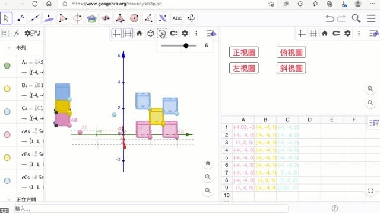
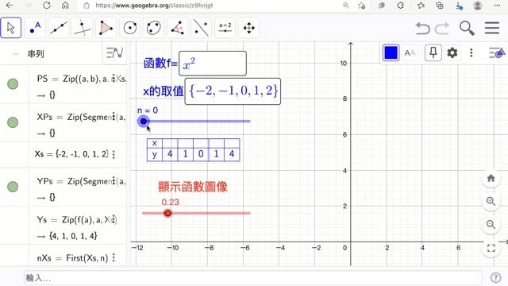
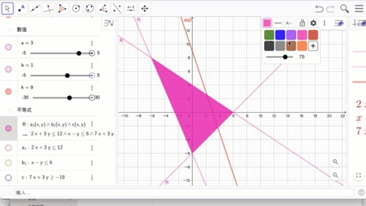

丞妤 GGB心得與作品節選
剛升國一的丞妤，是獵豹GGB的學員，努力認真的丞妤，利用GGB的學習，課程中就算遇到沒接觸過的國中、高中數學概念，也在解決問題的過程中慢慢跟著老師的引導學習了！
謝謝優秀的丞妤和大家分享學習心得！
逢山開路，遇水架橋。歡迎大家一起跟著獵豹老師挑戰自己！
獵豹 朱安強博士點評
『你不一定要等具備很多知識才能來解決問題。其實可以在解決問題的過程學習很多知識。』
丞妤是參加 GGB 暑期課剛升國一的學生。剛接觸這課會發覺課堂上用到很多空間座標、負數、向量、數列、平面方程式等概念。這些名詞對剛升國一的學生來說其實很陌生，也覺得很可怕。但丞妤親自動手做之後，發覺好像又沒有那麼難理解。

原來向量就是可以處理移動，空間座標其實就是方便我們描述立體的位置。而序列的使用在製作重複圖形時，需要觀察其規律性。原來要與電腦溝通，數學語言就是如此重要。而這些知識其實也不需要等念完很多書在來學，而是可以從做中學。從做中學更可理解知識是如何被應用的。
丞妤 心得與作品節選：
這兩個月的課讓我收益良多，對GGB的驚奇也不斷，很多其中的功能讓人難以想像，看似很難的題目竟然自己也做得出來。雖說其中有些老師講解的概念讓我有些嚇到（因為是高中的）但是在講解親自製作時好像又沒如此困難，這讓我在過程中得到了信心。我很感謝老師這兩個月的教導，也祝福老師身體健康，萬事如意

用描點法繪製函數圖像：https://www.geogebra.org/classic/z9fcrjgt
線性規劃與不等式區域：https://www.geogebra.org/classic/tjxv3ggf
用托拉法做立體方格的三視圖：https://www.geogebra.org/classic/rkh3pjqq
Penrose Stairs：https://www.geogebra.org/classic/ubzk6nxr
